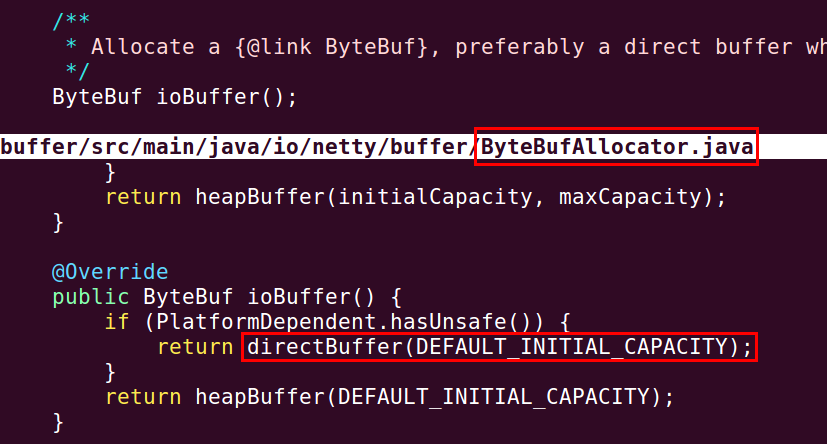
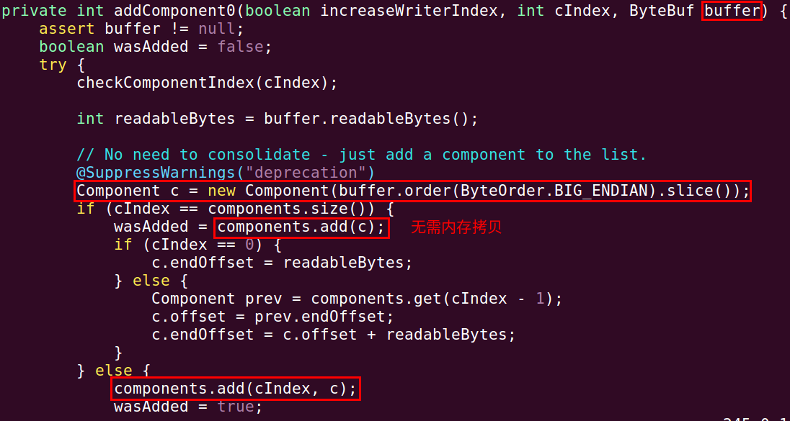
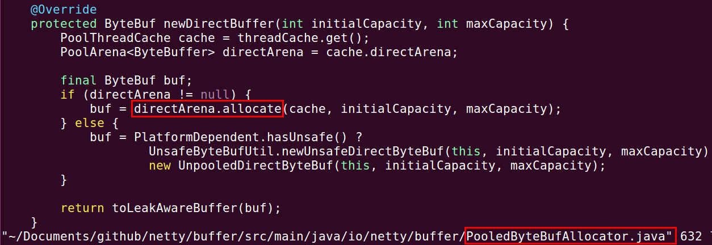
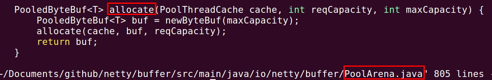
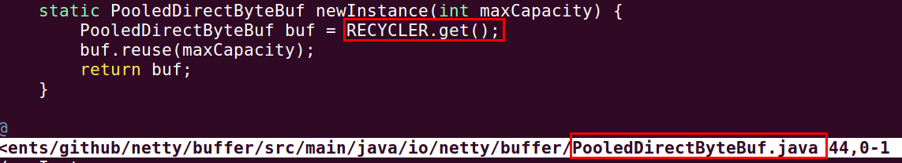
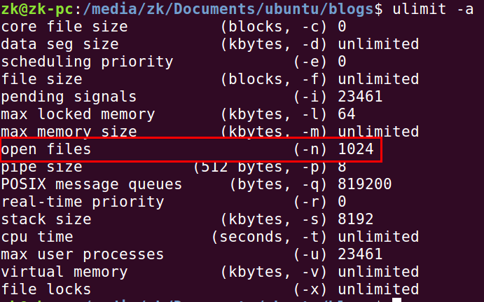

Netty 是一个高性能、异步事件驱动的 NIO 框架，它提供了对TCP、UDP和文件传输的支持，作为一个异步NIO框架，Netty的所有IO操作都是异步非阻塞的，通过Future-Listener机制，用户可以方便的主动获取或者通过通知机制获得IO操作结果。
1) 传输：用什么样的通道将数据发送给对方，BIO、NIO或者AIO，IO模型在很大程度上决定了框架的性能。
2) 协议：采用什么样的通信协议，HTTP或者内部私有协议。协议的选择不同，性能模型也不同。相比于公有协议，内部私有协议的性能通常可以被设计的更优。
3) 线程：数据报如何读取？读取之后的编解码在哪个线程进行，编解码后的消息如何派发，Reactor线程模型的不同，对性能的影响也非常大。
与传统的多线程/多进程模型比，I/O多路复用的最大优势是系统开销小，系统不需要创建新的额外进程或者线程，也不需要维护这些进程和线程的运行，降低了系统的维护工作量，节省了系统资源。
Netty的IO线程NioEventLoop由于聚合了多路复用器Selector，可以同时并发处理成百上千个客户端Channel，由于读写操作都是非阻塞的，这就可以充分提升IO线程的运行效率，避免由于频繁IO阻塞导致的线程挂起。另外，由于Netty采用了异步通信模式，一个IO线程可以并发处理N个客户端连接和读写操作，这从根本上解决了传统同步阻塞IO一连接一线程模型，架构的性能、弹性伸缩能力和可靠性都得到了极大的提升。
1) Netty的接收和发送ByteBuffer采用DIRECT BUFFERS，使用堆外直接内存进行Socket读写，不需要进行字节缓冲区的二次拷贝。如果使用传统的堆内存（HEAP BUFFERS）进行Socket读写，JVM会将堆内存Buffer拷贝一份到直接内存中，然后才写入Socket中。相比于堆外直接内存，消息在发送过程中多了一次缓冲区的内存拷贝。

2) Netty提供了组合Buffer对象，可以聚合多个ByteBuffer对象，用户可以像操作一个Buffer那样方便的对组合Buffer进行操作，避免了传统通过内存拷贝的方式将几个小Buffer合并成一个大的Buffer。

3) Netty的文件传输采用了 transferTo 方法，它可以直接将文件缓冲区的数据发送到目标Channel，避免了传统通过循环write方式导致的内存拷贝问题。
随着JVM虚拟机和JIT即时编译技术的发展，对象的分配和回收是个非常轻量级的工作。但是对于缓冲区Buffer，情况却稍有不同，特别是对于堆外直接内存的分配和回收，是一件耗时的操作。为了尽量重用缓冲区，Netty提供了基于内存池的缓冲区重用机制。


我们重点分析newByteBuf的实现，它同样是个抽象方法，由子类DirectArena和HeapArena来实现不同类型的缓冲区分配。这两个实现类就在 PoolArena.java 文件里面。

通过RECYCLER的get方法循环使用ByteBuf对象，如果是非内存池实现，则直接创建一个新的ByteBuf对象。
常用的Reactor线程模型有三种，分别如下：
1) Reactor单线程模型；
指的是所有的IO操作都在同一个NIO线程上面完成，NIO线程的职责如下：
由于Reactor模式使用的是异步非阻塞IO，所有的IO操作都不会导致阻塞，理论上一个线程可以独立处理所有IO相关的操作。从架构层面看，一个NIO线程确实可以完成其承担的职责。例如，通过Acceptor接收客户端的TCP连接请求消息，链路建立成功之后，通过Dispatch将对应的ByteBuffer派发到指定的Handler上进行消息解码。用户Handler可以通过NIO线程将消息发送给客户端。
对于一些小容量应用场景，可以使用单线程模型。但是对于高负载、大并发的应用却不合适，主要原因如下：
2) Reactor多线程模型；
Rector多线程模型与单线程模型最大的区别就是有一组NIO线程处理IO操作，它的原理图如下：

Reactor多线程模型的特点：
NIO线程-Acceptor线程用于监听服务端，接收客户端的TCP连接请求；在绝大多数场景下，Reactor多线程模型都可以满足性能需求；但是，在极特殊应用场景中，一个NIO线程负责监听和处理所有的客户端连接可能会存在性能问题。例如百万客户端并发连接，或者服务端需要对客户端的握手消息进行安全认证，认证本身非常损耗性能。在这类场景下，单独一个Acceptor线程可能会存在性能不足问题，为了解决性能问题，产生了第三种Reactor线程模型-主从Reactor多线程模型。
3) 主从Reactor多线程模型
主从Reactor线程模型的特点是：服务端用于接收客户端连接的不再是个1个单独的NIO线程，而是一个独立的NIO线程池。Acceptor接收到客户端TCP连接请求处理完成后（可能包含接入认证等），将新创建的SocketChannel注册到IO线程池（sub reactor线程池）的某个IO线程上，由它负责SocketChannel的读写和编解码工作。Acceptor线程池仅仅只用于客户端的登陆、握手和安全认证，一旦链路建立成功，就将链路注册到后端subReactor线程池的IO线程上，由IO线程负责后续的IO操作。

利用主从NIO线程模型，可以解决1个服务端监听线程无法有效处理所有客户端连接的性能不足问题。因此，在Netty的官方demo中，推荐使用该线程模型。
事实上，Netty的线程模型并非固定不变，通过在启动辅助类中创建不同的EventLoopGroup实例并通过适当的参数配置，就可以支持上述三种Reactor线程模型。正是因为Netty 对Reactor线程模型的支持提供了灵活的定制能力，所以可以满足不同业务场景的性能诉求。
在大多数场景下，并行多线程处理可以提升系统的并发性能。但是，如果对于共享资源的并发访问处理不当，会带来严重的锁竞争，这最终会导致性能的下降。为了尽可能的避免锁竞争带来的性能损耗，可以通过串行化设计，即消息的处理尽可能在同一个线程内完成，期间不进行线程切换，这样就避免了多线程竞争和同步锁。
为了尽可能提升性能，Netty采用了串行无锁化设计，在IO线程内部进行串行操作，避免多线程竞争导致的性能下降。表面上看，串行化设计似乎CPU利用率不高，并发程度不够。但是，通过调整NIO线程池的线程参数，可以同时启动多个串行化的线程并行运行，这种局部无锁化的串行线程设计相比一个队列-多个工作线程模型性能更优。
Netty的串行化设计工作原理图如下：

Netty的NioEventLoop读取到消息之后，直接调用ChannelPipeline的fireChannelRead(Object msg)，只要用户不主动切换线程，一直会由NioEventLoop调用到用户的Handler，期间不进行线程切换，这种串行化处理方式避免了多线程操作导致的锁的竞争，从性能角度看是最优的。
Netty的高效并发编程主要体现在如下几点：
1) volatile 的大量、正确使用;
2) CAS和原子类的广泛使用；
3) 线程安全容器的使用；
4) 通过读写锁提升并发性能。
Netty 百万级推送服务设计百万长连接接入，首先需要优化的就是Linux内核参数，其中Linux最大文件句柄数是最重要的调优参数之一，默认单进程打开的最大句柄数是1024，通过ulimit -a可以查看相关参数。

当单个推送服务接收到的链接超过上限后，就会报“too many open files”，所有新的客户端接入将失败。
通过vi /etc/security/limits.conf 添加如下配置参数：修改之后保存，注销当前用户，重新登录，通过ulimit -a 查看修改的状态是否生效。
1 | * soft nofile 1000000 |
需要指出的是，尽管我们可以将单个进程打开的最大句柄数修改的非常大，但是当句柄数达到一定数量级之后，处理效率将出现明显下降，因此，需要根据服务器的硬件配置和处理能力进行合理设置。如果单个服务器性能不行也可以通过集群的方式实现。
CLOSE_WAIT从事移动推送服务开发的同学可能都有体会，移动无线网络可靠性非常差，经常存在客户端重置连接，网络闪断等。
在百万长连接的推送系统中，服务端需要能够正确处理这些网络异常，设计要点如下：
I/O异常和解码异常等，防止句柄泄露。最后特别需要注意的一点就是close_wait 过多问题，由于网络不稳定经常会导致客户端断连，如果服务端没有能够及时关闭socket，就会导致处于close_wait状态的链路过多。close_wait状态的链路并不释放句柄和内存等资源，如果积压过多可能会导致系统句柄耗尽，发生“Too many open files”异常，新的客户端无法接入，涉及创建或者打开句柄的操作都将失败。
下面对close_wait状态进行下简单介绍，被动关闭TCP连接状态迁移图如下所示：

close_wait是被动关闭连接是形成的，根据TCP状态机，服务器端收到客户端发送的FIN，TCP协议栈会自动发送ACK，链接进入close_wait状态。但如果服务器端不执行socket的close()操作，状态就不能由close_wait迁移到last_ack，则系统中会存在很多close_wait状态的连接。通常来说，一个close_wait会维持至少2个小时的时间（系统默认超时时间的是7200秒，也就是2小时）。如果服务端程序因某个原因导致系统造成一堆close_wait消耗资源，那么通常是等不到释放那一刻，系统就已崩溃。
导致close_wait过多的可能原因如下：
fin之后没有及时关闭socket，这可能是Netty的Bug，也可能是业务层Bug，需要具体问题具体分析；socket不及时：例如I/O线程被意外阻塞，或者I/O线程执行的用户自定义Task比例过高，导致I/O操作处理不及时，链路不能被及时释放。下面我们结合Netty的原理，对潜在的故障点进行分析。
设计要点1：不要在Netty的I/O线程上处理业务（心跳发送和检测除外）。Why? 对于Java进程，线程不能无限增长，这就意味着Netty的Reactor线程数必须收敛。Netty的默认值是CPU核数*2，通常情况下，I/O密集型应用建议线程数尽量设置大些，但这主要是针对传统同步I/O而言，对于非阻塞I/O，线程数并不建议设置太大，尽管没有最优值，但是I/O线程数经验值是[CPU核数 + 1，CPU核数*2 ]之间。
假如单个服务器支撑100万个长连接，服务器内核数为32，则单个I/O线程处理的链接数L = 100/(32 2) = 15625。 假如每5S有一次消息交互（新消息推送、心跳消息和其它管理消息），则平均CAPS = 15625 / 5 = 3125条/秒。这个数值相比于Netty的处理性能而言压力并不大，但是在实际业务处理中，经常会有一些额外的复杂逻辑处理，例如性能统计、记录接口日志等，这些业务操作性能开销也比较大，如果在I/O线程上直接做业务逻辑处理，可能会*阻塞I/O线程，影响对其它链路的读写操作，这就会导致被动关闭的链路不能及时关闭，造成close_wait堆积。
设计要点2：在I/O线程上执行自定义Task要当心。Netty的I/O处理线程NioEventLoop支持两种自定义Task的执行：
Runnable: 通过调用NioEventLoop的execute(Runnable task)方法执行；ScheduledFutureTask:通过调用NioEventLoop的schedule(Runnable command, long delay, TimeUnit unit)系列接口执行。为什么NioEventLoop要支持用户自定义Runnable和ScheduledFutureTask的执行，并不是本文要讨论的重点，后续会有专题文章进行介绍。本文重点对它们的影响进行分析。
在NioEventLoop中执行Runnable和ScheduledFutureTask，意味着允许用户在NioEventLoop中执行非I/O操作类的业务逻辑，这些业务逻辑通常用消息报文的处理和协议管理相关。它们的执行会抢占NioEventLoop I/O读写的CPU时间，如果用户自定义Task过多，或者单个Task执行周期过长，会导致I/O读写操作被阻塞，这样也间接导致close_wait堆积。
所以，如果用户在代码中使用到了Runnable和ScheduledFutureTask，请合理设置ioRatio的比例，通过NioEventLoop的setIoRatio(int ioRatio)方法可以设置该值，默认值为50，即I/O操作和用户自定义任务的执行时间比为1：1。
我的建议是当服务端处理海量客户端长连接的时候，不要在NioEventLoop中执行自定义Task，或者非心跳类的定时任务。
设计要点3：IdleStateHandler使用要当心。很多用户会使用IdleStateHandler做心跳发送和检测，这种用法值得提倡。相比于自己启定时任务发送心跳，这种方式更高效。但是在实际开发中需要注意的是，在心跳的业务逻辑处理中，无论是正常还是异常场景，处理时延要可控，防止时延不可控导致的NioEventLoop被意外阻塞。例如，心跳超时或者发生I/O异常时，业务调用Email发送接口告警，由于Email服务端处理超时，导致邮件发送客户端被阻塞，级联引起IdleStateHandler的AllIdleTimeoutTask任务被阻塞，最终NioEventLoop多路复用器上其它的链路读写被阻塞。
对于ReadTimeoutHandler和WriteTimeoutHandler，约束同样存在。
百万级的推送服务，意味着会存在百万个长连接，每个长连接都需要靠和App之间的心跳来维持链路。合理设置心跳周期是非常重要的工作，推送服务的心跳周期设置需要考虑移动无线网络的特点。
当一台智能手机连上移动网络时，其实并没有真正连接上Internet，运营商分配给手机的IP其实是运营商的内网IP，手机终端要连接上Internet还必须通过运营商的网关进行IP地址的转换，这个网关简称为NAT(NetWork Address Translation)，简单来说就是手机终端连接Internet 其实就是移动内网IP，端口，外网IP之间相互映射。
GGSN(GateWay GPRS Support Note)模块就实现了NAT功能，由于大部分的移动无线网络运营商为了减少网关NAT映射表的负荷，如果一个链路有一段时间没有通信时就会删除其对应表，造成链路中断，正是这种刻意缩短空闲连接的释放超时，原本是想节省信道资源的作用，没想到让互联网的应用不得以远高于正常频率发送心跳来维护推送的长连接。以中移动的2.5G网络为例，大约5分钟左右的基带空闲，连接就会被释放。
由于移动无线网络的特点，推送服务的心跳周期并不能设置的太长，否则长连接会被释放，造成频繁的客户端重连，但是也不能设置太短，否则在当前缺乏统一心跳框架的机制下很容易导致信令风暴（例如微信心跳信令风暴问题）。具体的心跳周期并没有统一的标准，180S也许是个不错的选择，微信为300S。
在Netty中，可以通过在ChannelPipeline中增加IdleStateHandler的方式实现心跳检测，在构造函数中指定链路空闲时间，然后实现空闲回调接口，实现心跳的发送和检测，代码如下：
1 | public void initChannel(Channel channel) { |
对于长链接，每个链路都需要维护自己的消息接收和发送缓冲区，JDK原生的NIO类库使用的是java.nio.ByteBuffer,它实际是一个长度固定的Byte数组，我们都知道数组无法动态扩容，ByteBuffer也有这个限制，相关代码如下：
1 | public abstract class ByteBuffer |
容量无法动态扩展会给用户带来一些麻烦，例如由于无法预测每条消息报文的长度，可能需要预分配一个比较大的ByteBuffer，这通常也没有问题。但是在海量推送服务系统中，这会给服务端带来沉重的内存负担。假设单条推送消息最大上限为10K，消息平均大小为5K，为了满足10K消息的处理，ByteBuffer的容量被设置为10K，这样每条链路实际上多消耗了5K内存，如果长链接链路数为100万，每个链路都独立持有ByteBuffer接收缓冲区，则额外损耗的总内存 Total(M) = 1000000 * 5K = 4882M。内存消耗过大，不仅仅增加了硬件成本，而且大内存容易导致长时间的Full GC，对系统稳定性会造成比较大的冲击。
实际上，最灵活的处理方式就是能够动态调整内存，即接收缓冲区可以根据以往接收的消息进行计算，动态调整内存，利用CPU资源来换内存资源，具体的策略如下：
ByteBuffer支持容量的扩展和收缩，可以按需灵活调整，以节约内存；幸运的是，Netty提供的ByteBuf支持容量动态调整，对于接收缓冲区的内存分配器，Netty提供了两种：
FixedRecvByteBufAllocator：固定长度的接收缓冲区分配器，由它分配的ByteBuf长度都是固定大小的，并不会根据实际数据报的大小动态收缩。但是，如果容量不足，支持动态扩展。动态扩展是Netty ByteBuf的一项基本功能，与ByteBuf分配器的实现没有关系；AdaptiveRecvByteBufAllocator：容量动态调整的接收缓冲区分配器，它会根据之前Channel接收到的数据报大小进行计算，如果连续填充满接收缓冲区的可写空间，则动态扩展容量。如果连续2次接收到的数据报都小于指定值，则收缩当前的容量，以节约内存。相对于FixedRecvByteBufAllocator，使用AdaptiveRecvByteBufAllocator更为合理，可以在创建客户端或者服务端的时候指定RecvByteBufAllocator，代码如下：
1 | Bootstrap b = new Bootstrap(); |
如果默认没有设置，则使用AdaptiveRecvByteBufAllocator。
另外值得注意的是，无论是接收缓冲区还是发送缓冲区，缓冲区的大小建议设置为消息的平均大小，不要设置成最大消息的上限，这会导致额外的内存浪费。通过如下方式可以设置接收缓冲区的初始大小：
1 | /** |
对于消息发送，通常需要用户自己构造ByteBuf并编码，例如通过如下工具类创建消息发送缓冲区：

推送服务器承载了海量的长链接，每个长链接实际就是一个会话。如果每个会话都持有心跳数据、接收缓冲区、指令集等数据结构，而且这些实例随着消息的处理朝生夕灭，这就会给服务器带来沉重的GC压力，同时消耗大量的内存。
最有效的解决策略就是使用内存池，每个NioEventLoop线程处理N个链路，在线程内部，链路的处理时串行的。假如A链路首先被处理，它会创建接收缓冲区等对象，待解码完成之后，构造的POJO对象被封装成Task后投递到后台的线程池中执行，然后接收缓冲区会被释放，每条消息的接收和处理都会重复接收缓冲区的创建和释放。如果使用内存池，则当A链路接收到新的数据报之后，从NioEventLoop的内存池中申请空闲的ByteBuf，解码完成之后，调用release将ByteBuf释放到内存池中，供后续B链路继续使用。
使用内存池优化之后，单个NioEventLoop的ByteBuf申请和GC次数从原来的N = 1000000/64 = 15625 次减少为最少0次（假设每次申请都有可用的内存）。
Netty4之前的版本问题如下：每当收到新信息或者用户发送信息到远程端，Netty 3均会创建一个新的堆缓冲区。这意味着，对应每一个新的缓冲区，都会有一个new byte[capacity]。这些缓冲区会导致GC压力，并消耗内存带宽。为了安全起见，新的字节数组分配时会用零填充，这会消耗内存带宽。然而，用零填充的数组很可能会再次用实际的数据填充，这又会消耗同样的内存带宽。如果Java虚拟机（JVM）提供了创建新字节数组而又无需用零填充的方式，那么我们本来就可以将内存带宽消耗减少50%，但是目前没有那样一种方式。
在Netty 4中实现了一个新的ByteBuf内存池，它是一个纯Java版本的 jemalloc （Facebook也在用）。现在，Netty不会再因为用零填充缓冲区而浪费内存带宽了。不过，由于它不依赖于GC，开发人员需要小心内存泄漏。如果忘记在处理程序中释放缓冲区，那么内存使用率会无限地增长。
Netty默认不使用内存池，需要在创建客户端或者服务端的时候进行指定，代码如下：
1 | Bootstrap b = new Bootstrap(); |
使用内存池之后，内存的申请和释放必须成对出现，即retain()和release()要成对出现，否则会导致内存泄露。
值得注意的是，如果使用内存池，完成ByteBuf的解码工作之后必须显式的调用ReferenceCountUtil.release(msg)对接收缓冲区ByteBuf进行内存释放，否则它会被认为仍然在使用中，这样会导致内存泄露。
通常情况下，大家都知道不能在Netty的I/O线程上做执行时间不可控的操作，例如访问数据库、发送Email等。但是有个常用但是非常危险的操作却容易被忽略，那便是记录日志。
通常，在生产环境中，需要实时打印接口日志，其它日志处于ERROR级别，当推送服务发生I/O异常之后，会记录异常日志。如果当前磁盘的WIO比较高，可能会发生写日志文件操作被同步阻塞，阻塞时间无法预测。这就会导致Netty的NioEventLoop线程被阻塞，Socket链路无法被及时关闭、其它的链路也无法进行读写操作等。
以最常用的log4j为例，尽管它支持异步写日志（AsyncAppender），但是当日志队列满之后，它会同步阻塞业务线程，直到日志队列有空闲位置可用，相关代码如下：
1 | synchronized (this.buffer) { |
类似这类BUG具有极强的隐蔽性，往往WIO高的时间持续非常短，或者是偶现的，在测试环境中很难模拟此类故障，问题定位难度非常大。这就要求读者在平时写代码的时候一定要当心，注意那些隐性地雷。
TCP参数优化常用的TCP参数，例如TCP层面的接收和发送缓冲区大小设置，在Netty中分别对应ChannelOption的SO_SNDBUF和SO_RCVBUF，需要根据推送消息的大小，合理设置，对于海量长连接，通常32K是个不错的选择。
另外一个比较常用的优化手段就是软中断，如图所示：如果所有的软中断都运行在CPU0相应网卡的硬件中断上，那么始终都是cpu0在处理软中断，而此时其它CPU资源就被浪费了，因为无法并行的执行多个软中断。
大于等于2.6.35版本的Linux kernel内核，开启RPS，网络通信性能提升20%之上。RPS的基本原理：根据数据包的源地址，目的地址以及目的和源端口，计算出一个hash值，然后根据这个hash值来选择软中断运行的cpu。从上层来看，也就是说将每个连接和cpu绑定，并通过这个hash值，来均衡软中断运行在多个cpu上，从而提升通信性能。
JVM参数最重要的参数调整有两个：
Xmx:JVM最大内存需要根据内存模型进行计算并得出相对合理的值；GC相关的参数: 例如新生代和老生代、永久代的比例，GC的策略，新生代各区的比例等，需要根据具体的场景进行设置和测试，并不断的优化，尽量将Full GC的频率降到最低。io.netty.channel.FileRegionA region of a file that is sent via a Channel which supports zero-copy file transfer.
io.netty.channel.Channelio.netty.util.AbstractReferenceCounted